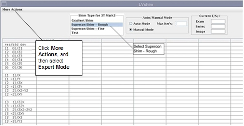

Operating Documentation
Direction 5670000, Rev# 1
Optima MR450w 1.5T Service Methods
Module Version 3.0, Version Date 11/16/09
Operating Documentation |
The Expert Mode of LVShim allows you to use several features that are normally not necessary to use during magnet shimming. These features are designed for experienced users. The Expert Mode options are:
Cal file
Scale currents (Example: Selecting 0.5 will insert half of the calculated current.)
Bandwidth
To access Expert mode, select More Actions in the upper left section of the LVShim GUI, and Expert Mode.
Select the shim type (gradshim/supercon rough/supercon fine/test) before you click expert mode, because contents of the expert mode depend on the shim type. See Illustration 1.
Illustration 1: Expert Mode
